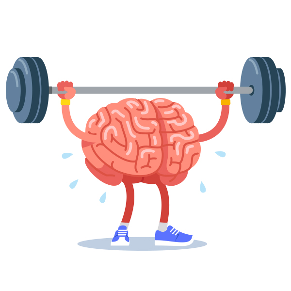
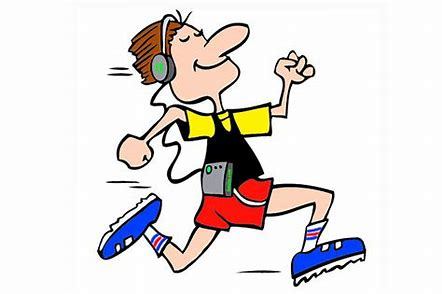
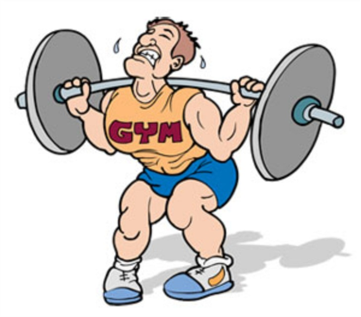

Hur påverkas hjärnan av träning?
Regelbunden träning är en nödvändig faktor för ditt välbefinnande. Efter ett träningspass
mår man bra eftersom endorfiner flödar. De ger en lugnande effekt mot stress och gör att man är
mer skärpt. Hjärnan är starkt beroende av hjärta och kärlsystemet och de mår betydligt bättre
ifall man tränar regelbundet.

Tre positiva konsekvenser för hjärnan:
-
Ökad koncentration:
När människor rör på sig tillkommer ungefär 20% mer blod i hjärnan. Det krävs inte mycket
rörelse för att hjärnan ska få i sig mer blod. Det räcker med att gå en promenad så att musklerna
aktiveras och pulsen ökar. Hjärtat pumpar ut mer blod i musklerna och därigenom ökar blodflödet
i hela kroppen inklusive hjärnan. Ju mer blod som pumpas runt i hjärnan desto högre halter syre
får hjärnan tillgång till. Det resulterar i bättre koncentration. Effekten efter ett träningspass
är kortvarig och sitter i någon timme. Däremot finns de flera studier som visar att regelbunden träning i flera
veckor ger en längre effekt, inte bara av koncentration men också ditt allmäna välmående.
- Träning minskar stress:
En del människor kan känna sig stressade över hur de ska hinna med ett familjeliv, ett jobb, ett socialt liv och
fysisk träning! Tiden är knapp och oftast skippas den fysiska aktiviten på grund av stress. Man borde tänka tvärt
om. Fysisk aktivitet hjälper oss att motverka stressade situationer och få ihop vardagspusslet. När du tränar byggs
ett försvar upp mot stress. Det gör att du tål stress bättre och lär kroppen att inte reagera så kraftigt i stressade situationer.
Under lång period av stress ökar hjärnans kortisolnivåer vilket inte är bra på lång sikt. Under ett träningspass ökar de också men skillnaden är att efteråt sjunker de till lägre
nivåer än vad de var innan.
- Minskad ångest, depression och oro:
Förutom att träning minskar stress minskar det även ångest och risken för depression och oro. Träning har visat sig vara mycket
effektivt för att motverka sådana upplevelser. Det finns flera studier som visar att fysisk aktivitet kan användas istället
för antidepressiva mediciner vid lättare depression. Det finns ett protein i hjärnan som kallas BDNF (Brain Derived
Neurotrophic Factor), känt som hjärnans mirakelämne. Proteinet fungerar som en brandvägg och skyddar hjärnans
nervceller. Det är dock viktigt att inte gå ut och träna för hårt i början, utan öka din träning successivts.
Konditionsträning
Konditionsträning är den vanligaste typen av träning och när man säger "dags att komma
igång med träningen" är det högst sannolikt att man förknippar det med konditionsträning. Konditionsträning är olika typer av träning som leder till
förbättring av syreupptagningsförmågan. En gemensam faktor i de olika träningsformerna är att pulsen ökar
och att man känner sig andfådd. Konditionsträning är den bästa träningsformen för att motverka depression och ångest. Som tidigare
nämnt är konditionsträning effektivast genom att den typen av träning producerar mest BDNF proteiner.

För att konditionsträningen ska utvecklas krävs det att man tränar regelbundet över en längre period och
att de syretransporterade organen (hjärta och lungor) får arbeta. För att utveckla konditionen på bästa sätt krävs varierad
träning med hänsyn till frekvens, duration och intensitet.
-
Frekvens:
Det är hur ofta du tränar, en rekomendation är hellre flera kortare träningstillfällen istället
för ett långt träningspass. Detta ifalll du vill utveckla din kondition.
-
Duration och intensitet:
Det är hur länge du tränar och vilken träningszon du bör ligga i. Träningszon speglar hur mycket du anstränger dig
mätt i pulshastighet. För att den syretransporterade förmågan ska utvecklas
brukar man säga att ett träningspass bör pågå i minst 20-30 minuter och ansträngningen bör ligga i en pulszon mellan
60-90% av ditt max.
Stryketräning
Styrketräning är att muskler bryts ner vilket gör att kroppen bygger upp dem igen. Då blir musklerna starkare och successivt ökar musklemassan.
För nybörjare syns resultat relativt snabbt, men efter en längre tids styrketräningen krävs högre belastning
och variation i de olika styrkeövningarna för att öka muskelmassan. När kroppen är i vila går det åt energi för att upprätthålla kroppstemperaturen
och underhålla inre organ. Det kallas basal ämnesomsättning och utgör ungefär 50-70% av din dagliga energi förbränning.
Efter ett styrketräningspass är din basala omsättning förhöjd i tre dagar vilket gör att du förbränner fler kalorier i vila.
Vid konditionsträningen är den basala omsättningen förhöjd i en dag efter träningspasset.
Styrketräning ger dig starkt skelett och det är en fördel att ha styrketränat under ditt liv så att du har mer muskler. Vid äldre
ålder bryts musklerna ner naturligt. När du styrketränar utför dina muskler två rörelser, en excentrisk
fas och koncentrisk fas.

-
Excentrisk:
Den excentriska fasen är när muskel eller led förlängs samtidigt som du kontrarherar den. Det vill säga
att man håller emot viktmotståndet. Exempelvis
bänkpress, där den excentriska fasen är när du kontrollerat sänker stången mot bröstet.
- Koncentrisk:
Den koncentriska fasen är då andra fasen av muskelrörelsen. Innebär att dina muskler drar ihop sig och blir därför
kortare. Exempelvis bänkpress, där den koncentriska fasen är när du lyfter stången från dig och jobbar mot gravitatinen.
Något som skiljer de två olika faserna är deras konsekvenser på musklerna. Den excentriska rörelsen är mer slitsam
mot musklerna. De går inte åt lika mycket energi som den koncetriska rörelsen. Men ifall intresset är att bygga
muskler ska man fokusera styrketräningen så att musklerna slits. Därför bör fokus riktas på den excentriska rörelsen vid om de främsta målet är ökad muskelmassa.